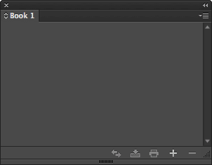
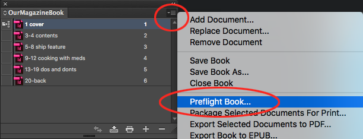
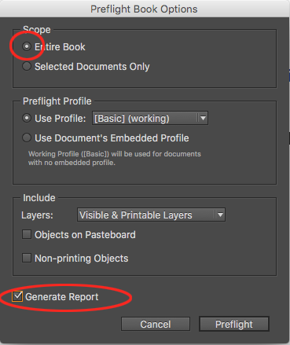

You know Indesign pretty well. But so far you’ve just been working on a few of your own indesign pages.
Creating large magazines in Indesign is a bit more complex. It requires you to manage files carefully and follow a particular workflow.
This page explains the workflow you need to follow to ensure a smooth-running project.
Failure to follow this workflow is likely to cause you massive problems near deadline. Ignore this at your own peril. Support may not be available to fix problems caused by your lack of care.
This article deals with:
where to store your project
file management strategy
managing a large publication with an Indesign Book
preflight checking
exporting
Use a shared production folder
Your group will be assigned a shared folder in your X: drive. Use it!
It’s important to use this shared area to work on your magazine so that:
all your project files are in a central location
everyone in the group can access the files
your files are safe and secure
The department will provide a safe and secure area for your group’s magazine project.
We advise you use this.
Failure to do so will be at your own risk!
Getting to the X: drive
You can access the X: drive via the start button on all University PCs:
Then drill down the relevant levels until you reach your shared group folder:
Managing your Indesign files
Next we'll deal with:
where to store images
using an Indesign template
creating and naming files
Make a folder for images
In your shared group folder on the X: drive, you should create a folder to put all your images into.
When you place an image into Indesign, it is linked. This means that Indesign needs to see the image and it matters greatly what happens to that image. If either the image or Indesign file move, the link is broken. This is problematic!
To avoid problems, always keep all your images in the shared project folder!
Use an Indesign Template
You should use an Indesign Template so that all pages in your magazine are the same size and have the same basic content e.g. colour swatches, style sheets, master pages.
This should the the first thing you do in Indesign:
create a document at the right size (e.g A4)
and add in any new colours, style sheets, master pages and auto page numbers
go Save As, and choose Template as the file type
Save it into your shared project folder.
Create all your Indesign documents
Never use a single Indesign file for your whole magazine!
If things go wrong, you run the risk of losing the whole thing. You know... Eggs, basket?
Create new Indesign documents for each article, feature or section in your magazine.
You will already have a flat-plan. Spend a bit of time creating your Indesign documents based on the flat-plan:
you can double-click the template file to create a new Indesign document
save each Indesign file based on *page numbers and content e.g. "1-2 cover and advert.idd", "3-5 contents.idd"
save them all into your shared project folder
*Prefixing with numbers will be useful later.
The Indesign Book
The Indesign Book
The Indesign Book is a crucial part of building a large publication out of individual Indesign files.
The Book is a special Indesign file that lets you add Indesign documents to organise and export.
The Book will help you with:
managing auto page-numbering
performing pre-flight checks
exporting your whole magazine
For a smooth workflow, create the Book as soon as all the Indesign files have been created.
You only need to create one Book file - File > New > Book
Save it in your group's shared folder.
Add your Indesign files to the Book
Click the add files icon in the book and choose all your Indesign documents. They will be loaded into the Book in alpha-numeric order - That's why it's useful to prefix with page numbers.

Your pages should drop into the book in the correct order. If they're not in the right order, just drag and drop within the book panel.
Close the Book, work on your magazine!
Just work!
Now that the Book has been made and is populated with your magazine's files, you can close it and forget about it for a while.
You'll need the Book later on when it's time to check and finalise your magazine ready for handing in and printing.
Pre-Flight checking
Pre-flight checking comes near the end when you want to make the final document checks.
You need to:
close down all Indesign documents
open the indesign Book
In the Book's menu, choose Preflight Book:

In the options, be sure to choose Entire Book and generate report:

This will generate a report and tell you if anything is wrong wtih your documents.
And finally...
Loading PDF presets
You need two versions of your magazine -
a small sized file to upload to MOLE as your group's submission (and to keep for yourself)
a high relolution PDF for us to send to the printers
You will need to load a couple of PDF presets before doing this. Download them here: